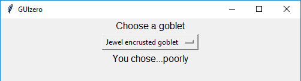

Combo
(Extends the OptionMenu class from tkinter)
Purpose
Display a drop down box allowing an option to be selected from a list of options
class guizero.Combo(master, options, selected=None, command=None, grid=None, align=None)
Create a Combo object
Create a basic Combo object like this:
app = App()
combo = Combo(app, ["Beef", "Chicken", "Fish", "Vegetarian"])
app.display()
The options parameter should be a list of options you wish to display in the combo box. All options will be converted to strings when added to the Combo box.
The above code looks like this on Windows:

When creating a Combo object, you can specify the following parameters. (More information about how to specify parameters can be found in the 'How to...' section.)
| Parameter | Takes | Default | Compulsory | Description |
|---|---|---|---|---|
| master | App or Box | - | Yes | The container to which this widget belongs |
| options | List | - | Yes | A list of options to display |
| command | function name | None | No | The name of a function to call when a different option is selected. The command can only be specified when creating the Combo object and cannot be changed later. |
| grid | List [int, int] | None | No | [x,y] coordinates of this widget. This parameter is only required if the master object has a grid layout. |
| align | string | None | No | Alignment of this widget within its grid location. Possible values: "top", "bottom", "left", "right". This parameter is only required if the master object has a grid layout. |
Methods
You can call the following methods on your Combo object
| Method | Takes | Returns | Description |
|---|---|---|---|
| get() | - | string | Returns the currently selected option |
| set(text) | text (string) | - | Sets the currently selected option to the option matching the string text |
| select_default() | - | - | Resets the combo box so that the first item in the list is selected |
| add_option(option) | option (string) | - | Adds a new item to the combo box with the value option |
| clear() | - | - | Removes all options from the Combo box |
Examples
Creating a Combo
The simplest way to create a Combo object is as follows:
app = App()
combo = Combo(app, ["Beef", "Chicken", "Fish", "Vegetarian"])
app.display()
Calling a function when the value selected changes
You can call a function when the selected value in a Combo object changes. This must be set up at the time you create the Combo object and cannot be defined later. The function you call MUST take a minimum of one parameter as it will automatically be passed a string containing the currently selected value in the Combo object.
def you_chose(selected_value):
result.set("You chose...")
if selected_value == "Tiny goblet":
result.append("wisely")
else:
result.append("poorly")
app = App()
instructions = Text(app, "Choose a goblet")
combo = Combo(app, ["", "Huge golden goblet", "Jewel encrusted goblet", "Tiny goblet"], command=you_chose)
result = Text(app)
app.display()
